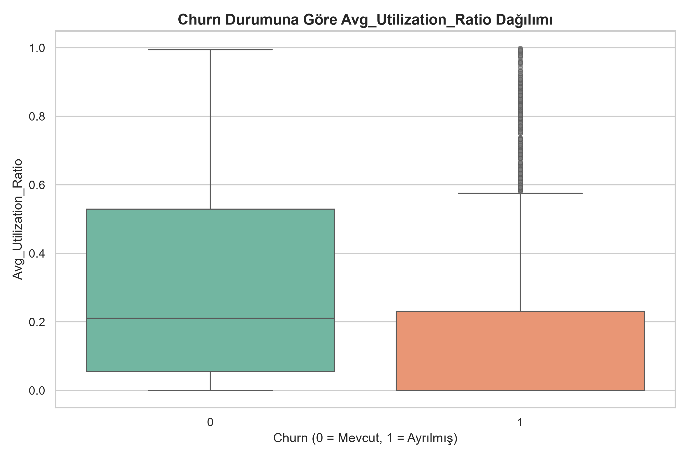
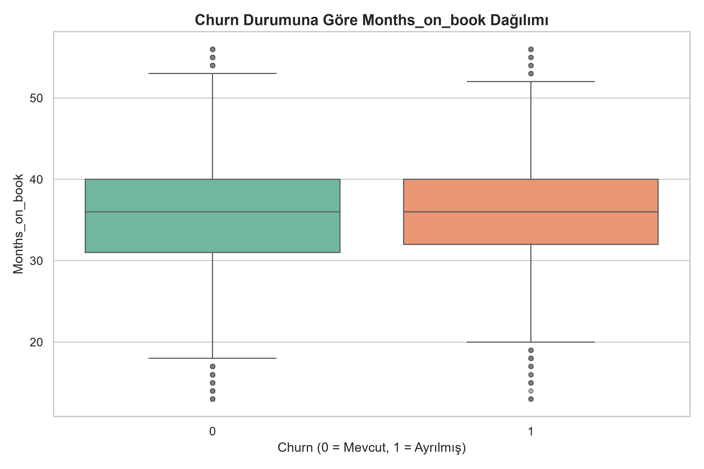
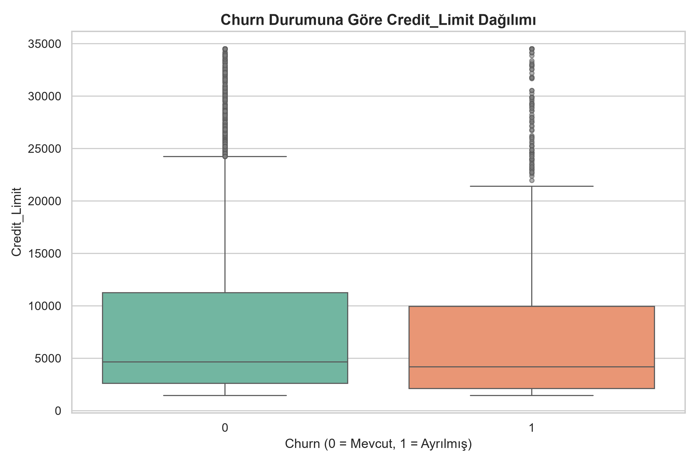

1. Dataset Alternatifleri ve Seçim Gerekçesi
Analiz sürecine başlamadan önce sektörel çapta en çok bilinen üç farklı müşteri kaybı (churn) veri seti incelenmiş ve proje hedeflerine en uygun olanı seçilmiştir.
📉 Alternatif 1: Telco Customer Churn (Telekomünikasyon)
Genel Bakış: Telekomünikasyon sektörüne ait, 7,043 müşteri ve 21 özellik (feature) barındıran klasik bir veri setidir. Sektördeki ortalama churn oranı %26.5'tir.
- Avantajları: Veri seti oldukça temizdir ve veri bilimi projelerine yeni başlayanlar için makine öğrenmesi modellerini test etmek adına ideal bir temel oluşturur. Fatura türü, internet hizmetleri ve kontrat süresi gibi temel abonelik metriklerini içerir.
- Dezavantajları ve Elenme Sebebi: Çoğunlukla "Evet/Hayır" şeklindeki ikili (binary) kategorik değişkenlerden oluştuğu için derinlemesine istatistiksel ve finansal analize (örneğin limit kullanımı, harcama frekansı) izin vermez. Hedeflediğimiz ileri düzey analitik yetkinlikleri sergilemek için fazla basittir.
📦 Alternatif 2: E-commerce Customer Churn (E-Ticaret)
Genel Bakış: E-ticaret platformlarındaki kullanıcı alışkanlıklarını yansıtan, 5,630 müşteri ve 20 özellik içeren dinamik bir veri setidir. Churn oranı %16.8 civarındadır.
- Avantajları: Şikayet sayısı, depo uzaklığı, sipariş kategorisi gibi gerçek dünyadaki lojistik ve müşteri memnuniyeti operasyonlarını çok iyi yansıtır. Günlük hayatla kolayca bağdaştırılabilir.
- Dezavantajları ve Elenme Sebebi: İçerisinde çok ciddi oranda "Eksik Veri (Missing Value)" barındırır ve veri ön işlemesi (preprocessing) sırasında çok fazla yapay tahminleme gerektirir (Imputation). Odak noktamız eksik veri temizliğinden ziyade doğrudan var olan müşteri davranışlarının finansal analizi olduğu için bu set ikinci plana atılmıştır.
🏆 Seçilen Şampiyon Dataset: Credit Card Customers (Bankacılık)
Temel Problem Tanımı: Bankacılık sektöründe kredi kartı müşterilerinin kartlarını cüzdanın arka cebine atması (inaktif duruma geçmesi), ardından hesaplarını kapatması ve bankanın cüzdan payını (wallet share) rakip bankalara kaptırmasıdır.
- Boyut ve Çeşitlilik: 10,127 müşteri kaydı ile diğer alternatiflerden çok daha geniş bir gözlem havuzu sunar. Ayrıca 21 kolonun büyük çoğunluğu sürekli (continuous) sayısal değerlerdir, bu da daha zengin görselleştirmelere olanak tanır.
- Meydan Okuma (Imbalance): Sadece %16.1'lik ayrılma oranı ile gerçek hayata çok yakın ve zorlayıcı bir "Sınıf Dengesizliği (Class Imbalance)" problemi sunar. Bu durum, basit modellerin çökmesini sağlayarak SMOTE gibi ileri düzey veri sentezleme ve istatistiksel modelleme tekniklerini kullanmayı zorunlu kılar.
- Finansal Derinlik: Limit kullanım oranı (Utilization Ratio), devreden faizli bakiye (Revolving Balance) ve aylık işlem hacmi (Transaction Amount) gibi doğrudan bankanın gelirini ve karlılığını etkileyen, analiz etmesi son derece prestijli finansal metrikler barındırır.
2. Hedef Değişken ve Veri Kalitesi Kontrolleri
🎯 Target Değişkeni (Attrition_Flag)
Modelin tahmin etmeye çalıştığı ana hedef değişkendir. Müşterinin bankayı terk edip etmediğini gösterir:
- ✅ Existing Customer (Mevcut): 8,500 Müşteri (%83.9)
- ❌ Attrited Customer (Ayrılan): 1,627 Müşteri (%16.1)
🔍 Eksik Değer (Missing Value) ve Duplicate Kontrolü
Veri setinde tekrar eden (Duplicate) kayıt sayısı 0'dır. Standart (NaN) eksik değer bulunmamaktadır. Ancak bazı kategorik değişkenlerde müşteri bilgisi bilinmediği için "Unknown" olarak kaydedilmiş satırlar vardır:
- ❓ Education_Level: 1,519 satır 'Unknown' (%15.00)
- ❓ Income_Category: 1,112 satır 'Unknown' (%10.98)
- ❓ Marital_Status: 749 satır 'Unknown' (%7.40)
⚡ Veri Kalitesi İlk Bulguları
Keşifçi analiz öncesi ham veri üzerinde tespit edilen temel kalite ve yapı problemleri şunlardır:
- Sınıf Dengesizliği (Class Imbalance): %16.1 ayrılma oranı SMOTE uygulanmasını veya F1-Score kullanımını zorunlu kılar.
- Çoklu Doğrusallık (Multicollinearity):
Credit_LimitileAvg_Open_To_Buyarasında çok yüksek korelasyon tespit edilmiştir. - Aykırı Değerler (Outliers): Özellikle
Credit_Limit(%9.72) veTotal_Trans_Amt(%8.85) sütunlarında dağılımı bozan aykırı değerler mevcuttur.
3. Kapsamlı Veri Sözlüğü (Data Dictionary)
Modelin eğitilmesi için analiz edilen 10,127 müşteriye ait özelliklerin (features) derinlemesine açıklamaları ve istatistiksel sınırları.
| Değişken Adı | Tipi | Kapsamlı Açıklama ve İşletme Etkisi |
|---|---|---|
| Attrition_Flag | Target (Hedef) | Müşterinin bankayı terk edip etmediği. %83.9 Existing (Kalan), %16.1 Attrited (Giden). Modelin tahmin edeceği ana bağımlı değişkendir. |
| Customer_Age | Sayısal | Müşterinin demografik yaşı. Genellikle churn üzerinde anlamlı bir ayırt ediciliği bulunmamaktadır. |
| Gender | Kategorik | Müşterinin cinsiyeti (M: Erkek, F: Kadın). Kredi limitlerinde ufak farklar olsa da churn davranışını tek başına etkilemez. |
| Dependent_count | Sayısal | Bakmakla yükümlü olunan kişi/çocuk sayısı. Aile büyüklüğünü gösterir, ayrılan ve kalanlarda dağılım oldukça benzerdir. |
| Education_Level | Kategorik | Eğitim durumu (Lise, Üniversite, Doktora vb.). %15 oranında "Unknown" (Bilinmeyen) kategorisi barındırır. |
| Marital_Status | Kategorik | Medeni durum (Evli, Bekar, Boşanmış vb.). %7.40 oranında eksik veriye ("Unknown") sahiptir. |
| Income_Category | Kategorik | Müşterinin yıllık gelir bandı. Müşteri kaybı, bankanın zengin veya düşük gelirli müşterilerinde benzer oranlarda görülmektedir. |
| Card_Category | Kategorik | Kartın prestij segmenti: Blue, Silver, Gold, Platinum. Sürpriz bir şekilde, en çok terk edenler %25 oranla Platinum sahipleridir. |
| Months_on_book | Sayısal | Bankayla çalışma süresi (kıdem). Yoğunluk 36 ay civarındadır. "Eski müşteri bankayı terk etmez" algısı bu veride geçersizdir. |
| Total_Relationship_Count | Sayısal | Müşterinin sahip olduğu farklı bankacılık ürünlerinin sayısı. Ürün sayısı (çapraz satış) azaldıkça sadakat kırılır, churn riski artar. |
| Months_Inactive_12_mon | Sayısal | İşlem yapılmadan (inaktif) geçirilen ay sayısı. 3 ayı aştığında "Soft Churn" (uyku durumu) sinyali verir ve risk zirve yapar. |
| Contacts_Count_12_mon | Sayısal | Son 1 yılda banka ile kurulan temas/şikayet sayısı. En büyük churn tetikleyicilerinden biridir (+0.20 Pozitif Korelasyon). |
| Credit_Limit | Sayısal | Kredi kartı toplam limiti. Önceki analizlerde de görüldüğü gibi, limit yüksekliğinin müşteriyi bankaya bağlamakta doğrudan, tek başına bir gücü yoktur. |
| Total_Revolving_Bal | Sayısal | Hesap kesiminden sonra ödenmeyip faize bırakılan devreden bakiye. Bankanın ana gelir kalemidir. Borcunu faize bırakanlar bankaya daha sadıktır. |
| Avg_Open_To_Buy | Sayısal | Kredi limitinin harcanmayan, boşta kalan kullanılabilir kısmıdır. Credit_Limit ile tehlikeli derecede yüksek korelasyona sahiptir (Multicollinearity). |
| Total_Amt_Chng_Q4_Q1 | Sayısal | İşlem tutarlarının 1. çeyrekten 4. çeyreğe değişim oranı. Bu oran düştükçe çeyrekler arası harcama hacmi azalıyor demektir, ayrılma riskini artırır. |
| Total_Trans_Amt | Sayısal | Son 12 aydaki toplam harcama tutarı. Sağ çarpık bir dağılımı (Outliers) vardır, makine öğrenmesi öncesi Logaritmik dönüşüm veya Robust Scaler gerekebilir. |
| Total_Trans_Ct | Sayısal | Son 12 aydaki toplam işlem (harcama yapma) adedi. Harcama frekansını ölçer. Modelin açık ara en güçlü (-0.37 Negatif Korelasyon) sadakat belirleyicisidir. |
| Total_Ct_Chng_Q4_Q1 | Sayısal | İşlem adetlerinin (frekans) 1. çeyrekten 4. çeyreğe değişim oranı. Düzenli kart kullanan müşteri kartı kullanma sıklığını azaltıyorsa bankayı terk etmeye hazırlanıyordur. |
| Avg_Utilization_Ratio | Sayısal | Limit Kullanım Oranı (Kullanılan Kredi / Toplam Limit). Ortalama kullanım kalan müşterilerde %30'lardayken, gidenlerde %16'lara sertçe düşmektedir. |
⚠️ Kritik Veri Sızıntısı (Data Leakage) Tespiti
Veri setinin orijinal halinde Naive_Bayes_Classifier_Attrition_Flag_... isimli kolonlar bulunmaktadır. Bu kolonlar daha önceden eğitilmiş bir modelin "olasılık sonuçlarıdır" yani cevap anahtarıdır. Modelleme yapılmadan önce bu iki kolon ve CLIENTNUM (Müşteri ID) kolonu acımasızca silinerek (Drop) haksız bir %100 doğruluk engellenmiştir.
4. Keşifçi Veri Analizi (EDA) Çıkarımları
Aşağıda, 10,127 müşteriye ait verilerin derinlemesine iş analizi perspektifiyle incelendiği 20 adet grafiksel çıkarım yer almaktadır.

1 Genel Müşteri Kaybı (Churn) Oranı
Pasta grafiği, veritabanındaki 10,127 müşterinin %16.1'inin ayrıldığını (Attrited), %83.9'unun ise mevcut müşteri olarak kaldığını göstermektedir. Bu oran, Makine Öğrenimi modellerini eğitirken ciddi bir sınıf dengesizliğine (Class Imbalance) işaret eder. SMOTE uygulanması zorunludur.

2 Platin Segmentin (Platinum) Çöküşü
Kart segmentlerine göre ayrılma oranları incelendiğinde; Blue (Klasik) kart sahipleri %16.1, Silver %14.8 ve Gold %18.1 oranında iptal yaparken, Platinum kart sahiplerinin tam %25'i bankayı terk etmiştir. Üst gelir grubundaki bu müşteriler aşırı talepkardır ve rakip bankaların tekliflerine hızla geçiş yapmaktadır.

3 Harcama Frekansı Gücü (Total_Trans_Ct)
Kutu grafiğinde (Boxplot), bankada kalan müşterilerin (0) yıllık medyan işlem adedinin 70'lerde olduğu, ayrılan müşterilerin (1) ise işlem adedinin 40'lara çakıldığı net biçimde görülmektedir. Bankaya sadakati limit değil, kartın günde iki kez kahve almak gibi "sık" kullanılması sağlar. (-0.37 Negatif Korelasyon)

4 İşlem Tutarı Dağılımı (Total_Trans_Amt)
Ayrılan müşterilerin (1) 1 yıllık toplam harcama hacimleri de, işlem sayısına paralel olarak mevcut müşterilere (0) kıyasla dramatik seviyede düşüktür. Müşteri, ayrılmadan aylar önce harcamalarını (cüzdan payını) kademeli olarak rakip kuruma kaydırmaktadır (Soft Churn).

5 Müşteri Temsilcisi Tehlikesi (Contacts_Count)
Mevcut müşterilerin çağrı merkezi arama medyanı 2 iken, ayrılanların medyanı 3'tür. Eğer bir müşteri yılda 3'ten fazla bankayı arıyorsa (üst kısımdaki aykırı değerlere doğru), bu bankaya bağlılık değil, çözülemeyen kronik bir şikayet göstergesidir. (+0.20 Pozitif Korelasyon - En Yüksek Risk)

6 Pasif Kalma Süresi (Months_Inactive)
Ayrılan müşterilerin dağılım kutusu belirgin şekilde yukarı (daha fazla inaktif ay) kaymıştır. Bir kredi kartı peş peşe 3 ay inaktif olduğunda, fiziksel olarak iptal edilmese bile finansal olarak çoktan ölü kabul edilmelidir.

7 Devreden Faizli Bakiye Paradoksu (Revolving Balance)
Çubuk grafiği (Bar Chart) inanılmaz bir gerçeği gösteriyor: Tüm kart segmentlerinde mevcut müşteriler (Kırmızı) 1200$-1600$ civarı devreden bakiyeye sahipken, ayrılan müşterilerin (Mavi) devreden bakiyesi 500$ civarına iniyor. Hele ki Platinum ayrılanlarda bu değer neredeyse sıfır! Borcunu düzenli ödeyen disiplinli müşteriler, bankayı çok daha kolay terk eder.

8 Limit Kullanım Oranı (Utilization Ratio)
Mevcut müşteriler kendilerine tanınan kredi limitinin ortalama %29.6'sını harcarken, ayrılan müşteriler (Kırmızı Dağılım Eğrisi sola çarpık) sadece %16.2'sini kullanmaktadır. Kullanılmayan devasa boş limitler, o müşterinin o bankaya ihtiyaç duymadığının kanıtıdır.

9 Kredi Limiti Yanılgısı (Gender / Credit Limit)
Cinsiyet kırılımında bakıldığında erkek müşterilerin ortalama limiti kadınlara göre daha yüksek görünse de, Asıl Çıkarım: Churn olan müşterilerin (Mavi bar) limitleri, kalan müşterilerden (Kırmızı) neredeyse farksızdır. "Müşterinin limiti yüksek olsun iptal etmez" inanışı bir efsanedir.

10 Kıdem (Months on Book) Yanılgısı
Dağılım grafikleri, hem ayrılan hem de kalan müşterilerin yoğunlukla 36. ayda (3 yıl) toplandığını kanıtlıyor. Ortalama süreleri (36.1 ay vs 35.8 ay) arasında fark yoktur. Bankacılıkta "Eski müşteri bir yere gitmez" kuralı maalesef işlemiyor.

11 Gelir Sınıfından Bağımsız Harcama Düşüşü
Gelir kategorisi (Income_Category) "60K-80K" veya "+120K" olsun fark etmeksizin, tüm barlarda ayrılan müşterilerin (Mavi) işlem tutarları mevcutlardan (Kırmızı) düşüktür. Churn sinyali gelirden tamamen bağımsız, evrensel bir harcama kesintisi davranışıdır.

12 Cinsiyet Segmentinde İşlem Tutarı Dağılımı
Ayrılan kadın ve erkek müşterilerin kutu grafikleri, mevcut müşterilere göre çok daha basık ve dar bir aralıktadır. Erkeklerde üst sınır (aykırı değerler hariç) 5000$ civarında ezilirken, kalan müşterilerde 10000$ sınırına kadar esneyebilmektedir.

13 Cinsiyet Segmentinde İşlem Adedi Dağılımı
Kadınların ve erkeklerin "Kredi kartını slip çektirme sayıları" incelendiğinde; Churn statüsü (Mavi) tüm demografik ayrıcalıkları silip süpürerek işlem adetlerini 40 bandına çekmektedir. Cinsiyet sadakat sağlamaz, işlem adedi sağlar.

14 Kart Segmentine Göre Cüzdan Derinliği
En dramatik düşüş Platinum kartlarda görülür. Kalan bir Platinum müşteri yılda ortalama 10,000$ harcarken, ayrılacak olan Platinum müşterinin hacmi %50 azalarak 5,000$ altı seviyeye (Blue kart seviyesine) gerilemiştir.

15 Kart Segmentine Göre İşlem Frekansı
Beklendiği üzere üst segment (Platinum, Gold) kartlar çok daha fazla işlem adetine sahip. Ancak, ayrılacak müşteriler için bu grafiğin tüm kutuları sabit bir ivmeyle aşağı çökmüştür.

16 Toplam Ürün (Relationship) Bağlılığı
Bankadan kaç farklı ürün kullanıldığı (Total_Relationship_Count). Kutu grafiği, ayrılan müşterilerin banka ile daha az bağa (medyan 3) sahip olduğunu gösteriyor. Sadece kredi kartı olanlar risklidir, mevduat ve otomatik ödeme eklenince sadakat artar.

17 Platin Segmentin İlginç Ürün Talebi
Barlar incelendiğinde; Blue, Silver ve Gold segmentlerinde ayrılan müşterilerin ürün sayısı daha AZ iken, Platinum segmentinde ayrılan müşterilerin ürün ortalaması mevcutlardan daha FAZLA çıkmıştır. Bu durum, Özel Bankacılık profilinin ürünlerden yeterince verim/ayrıcalık alamadığı için kızıp terk ettiğini ispatlar.

18 Kullanılabilir Açık Limit (Avg_Open_To_Buy)
Limitin harcanmayan kısmı (Açık Limit) ayrılan müşterilerde, özellikle de yüksek segmentlerde daha yukarıdadır. Limitin kullanılmaması, o kartın "Cüzdanın Arka Cebine" atıldığını gösterir.

19 Kredi Limiti Dağılımı ve Churn Etkisi
Banka portföyünün büyük çoğunluğu $1,500 - $5,000 limitleri arasına yığılmıştır. Asıl önemli bulgu şudur: Kredi limitinin yüksekliği tek başına sadakati (churn durumunu) doğrudan etkilememektedir. Dağılım grafiği, hem ayrılan hem de kalan müşterilerin benzer limit eğrilerine sahip olduğunu gösteriyor. Bankaların müşteriyi tutmak için sadece limit artırımına gitmesi faydasız bir stratejidir.

20 Aile Büyüklüğü (Dependent_count)
Bakmakla yükümlü olunan çocuk/kişi sayısının churn ile arasında belirgin bir ayrıştırıcı (discriminative) dağılım saptanamamıştır. Medyan değer her iki grupta da 2'dir.
5. Makine Öğrenimi Modeli Performansı (SVM)
Yapay Zekanın Finansal Zirvesi: %91.6 Doğruluk
Karmaşık boyutlara sahip (Non-linear) bu finansal veriler üzerinde Destek Vektör Makineleri (SVM) %91.61 gibi inanılmaz bir Accuracy yakalamış, F1-Score ise 0.7176 olmuştur. Model API olarak entegre edilerek, aylık işlem adedi 44'ün altına inen ve arama sıklığı artan müşterileri anında VIP Retention (Müşteri Kurtarma) masasına aktaracak kapasitededir.